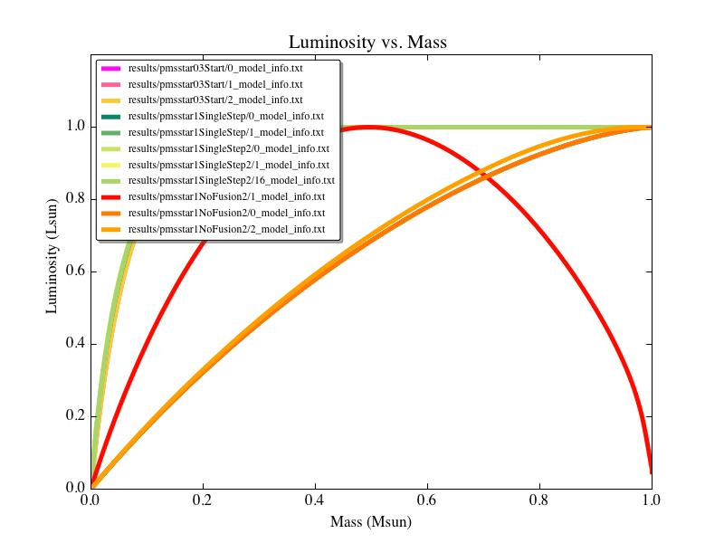

Date
& Time: April 14, 2012
Location:
Home
Computing
context: Macho Mac:
/Desktop/Research/BodenheimerCode/workingdir/UnalteredCode/
Scripts/Software
created today:
Scripts/Software
created recently:
addcol:
added to /usr/local/bin/, so it's in my path and you don't have to
copy/add/link it to every directory where you want to use it. It
adds a '.' to the 'put a * here if convection is occuring in this
mass cell' column of the model files. So, you run this on all the
model files in a new results directory immediately after you've
parsed the raw simulation output into individual models.
./follow
<filename>
What
it does: launches 2 xterms to follow the progress of a simulation
by grepping the simulation's text output file for 'dtime' and
'record', respectively
Where
it lives: /usr/local/bin/ (you need root access to write to that
directory)
Language
it's written in: shell script/basic unix commands
plot_x_vs_y.py
What
it does: plots any of the HR_model_info variables against any other
HR_model_info variable, for an arbitrary number of results/cases.
Prompts the user to specify which variables to assign to the x and
y axes, then prompts user to select HR_model_info files to read in.
Then, asks the user if they want to save the resulting plot, and
where. The output filename is automatically assigned to be
Yvar_vs_Xvar.jpg/pdf, for ease of organization.
Where
it lives: /Desktop/Research/BodenheimerCode/
Language
it's written in: python
Useful
computer stuff figured out today:
Useful
computer stuff figured out recently:
Set
a (as yet non-permanent) command line alias to take me to the
/Users/laurel/Desktop/Research/BodenheimerCode/workingdir/UnalteredCode/results
folder:
How
to automatically fill in that '* goes here to indicate convection is
happening at this mass cell' column in all the model files in the
/results/ directory.
file="0_model_info.txt";
cat $file| awk '{if ( match($0,"MODEL") ||
(match($0,"dM") ) ) { } else if ($2 != "*") {$1
= $1 " ."; } else {$1=$1"";}; if (NF >11)
{print $0;}};' > temp.txt; mv temp.txt $file
A
shell script called 'n' (in /usr/local/bin/. You'll need to use
'sudo' to do anything to the file.) that takes care of the setting
up a growlnotification for any command you run. Use as follows:
If
you get the following error when attempting to use growlnotify:
growlnotify[681:903]
could not find local GrowlApplicationBridgePathway, falling back to
NSDNC
Go
to System Preferences --> Growl --> Stop Growl (then Start
Growl)
From
last time: I copied over a clean version of Peter's code (as
initially modified by Greg to get it to work) from my "backup"
dir in to "UnalteredCode" in my working dir.
If
you want to add a constant numerical value to the names of all the
(numbered) files in a directory, enter the following command at the
unix prompt, when you're within that directory:
ls
*_model_info.txt | sort -r | awk -F'[_]' '{old=$0; n=$1+100;
sub($1,n,$0); print "mv " old " "$0}' | sh
If
you want a simulation to 'pick up' where the results of a previous
one left off, make sure to set MODA = -1 in the .start file
Figured
out how to get the legend on my python-generated figures to have
multiple columns (and thereby fit on the visible portion of the
graph):
legend(prop={'size':8},loc='lower
center', ncol=3, fancybox=True, shadow=True)
Updated
both MyPythonGUIPlottingScript.py and plot_HR_evolution.py to
include this nicer, more legible version of the legend.
To
set a pop-up notification on my desktop that lets me know when one
of these really long thecode.f runs is finished (running in the
background), start the run like this:
It
looks like thecode.f can't handle NRIT values above 1000. Either
that, or it can't figure out how to do mod-arithmatic on NMOD values
above 9999. So, you can't really run the code for 10000 timesteps
and have it write output every 1000 steps. For now, my best work
around is to let the code go for 9500 time steps, and have it write
out model data every 500 steps.
Should
look into this more next time, in thecode.f itself.
Continuing
from last time:
Upload my group meeting
presentation and advisor meeting notes to the wordpress blog
Email Greg w/ my question(s)
about the alpha ratios for superadiabatic systems.
Test out the Mendeley plugin for
OpenOffice that I allegedly installed today but have to restart
ooffice to access. Does it work? Is it convenient? Stay tuned to
find out!
Email the people I want to be on
my quals committee
Go talk to the people in the
business office about computer purchase order stuff/ reimbursments/
etc.
It doesn't matter
whether you start your model out with or without fusion. As long as
you can move from the initial input polytropic model to a converged
model at the next timestep, you're fine.
If you evolve a
converged model forward without fusion (but with Crad and Cwrk
fully on), the model will *always* evolve down to the same shape
(for the luminosity profile, at least).
So, whether or not
it's physical to start a model off with or without any energy
generation coming from fusion, once you continue its evolution
without fusion, you get the same result either way.
This exactly
what I'd been hoping to find out, so it's all good news!
Now, start trying to
get 0.3Msun (or possibly even 0.2 or 0.1 Msun) models to converge
without fusion.
Use .start and .inp
parameter files similar to the ones used with pmsstar1NoFusion2 and
pmsstar1NoFusion2Cont, only with a lower mass polytropic input
Start with the
0.3Msun case, and then try the 0.2 and/or 0.1 Msun cases
To
Do/Today:
Trying to get the 0.3Msun case to
converge initially w/o fusion (only 1 timestep)
Name of this run:
03NoFusionStart
Exits with a 'STOP invstate'
error
May need to dial down the Crad
or Cwrk contributions
and/or reduce the timestep size
(reduce the value it starts with, and perhaps the lower limit on
the timestep size?)
Restored Crad to 1, and
decreased dTIM from 1e11 to 1e9 seconds
Still exits with a 'STOP
invstate' error
Maybe try setting Cwrk = 0 and
retry?
Maybe try running a single
out-of-the-box run of this 0.3Msun setup with fusion on and see
what happens?
A comparison of all these
different runs (pmsstar1 with fusion, without fusion, pmsstar03 with
fusion) looks like this:

Figure
1:
A comparison of the
1Msun w/ and w/o fusion and 0.3Msun w/ fusion models, all normalized
to max M and L units (to highlight how the shapes of the profiles
compare).
I think the best way forward might
just be to let the 0.3Msun simulation move forward one timestep with
fusion on, and then evolve that converged model forward without
fusion. I'm not 100% sure it'll work, but I think it's the quickest
and most likely option.
Name of this run: 03FusionStart
That first step converged.
Now, to continue the run with NO
fusion.
Name of this (part of the) run:
03NoFusionCont
It completed the 500 timesteps
without crashing, so that's encouraging.
The results:

Figure
2:
HR diagram evolution
of a 0.3Msun model with (green, pmsstar03Test) and without
(03NoFusionCont, orange) fusion. The last model in the no-fusion
case is ~6e15 seconds old, while the final model in the with-fusion
case is ~1e18 seconds old.

Figure
3:
A comparison of the
internal luminosity profiles of the with-fusion case (red) and the
no-fusion case (blue) at similar youthful ages in their evolution
(see annotations on plot).
Figure
4:
Comparison of the HR
diagram evolution of the with-fusion (pmsstar03Test, green) vs.
without-fusion (03NoFusionCont, orange) of a 0.3 Msun star. In this
diagram the youngest and oldest with-fusion points are 7.0094D+11
and 3.5837D+18 seconds old, respectively. The youngest and oldest
no-fusion models are 5.7810D+12 and 5.4727D+17 seconds old,
respectively.
The behavior of this no-fusion 0.3
Msun model is really exciting! Unlike the 1.0 Msun no-fusion model,
which eventually 'blows up' (getting overly hot and luminous, and
refusing to converge), this model does the opposite: gets small (in
radius and luminosity) and cold (externally, at least). I wonder
what the transition mass between these two types of behavior is.
Anyway, I'm going to continue
evolving this no-fusion 0.3Msun model forward under the same run-name
until it reaches ~3e18 seconds of age. This will let me compare it
more thoroughly to the with-fusion case's evolution. It'll also
satisfy my curiosity about what happens to this thing if we let it
keep evolving in the absence of fusion. (Will the simulations ever
refuse to converge?)
Actually, it looks like it
crashed on the previous round (the one plotted in Figure 4 above) on
step 989 with a 'stop no convergence' error, which is what TheCode.f
throws when it can't decrease the timestep size enough after 3 tries
to get the model to converge. This type of error doesn't
necessarily mean that the model can't converge. It's a weakness of
TheCode's design that it gives up after decreasing the dTIM size
only twice.
Oddly, though, now that I've
restarted that simulation from record 19 (timestep ~951), it's
converging fine. Right now, it's gotten to timestep ~1771, which is
way beyond where it supposedly couldn't converge on the previous
round/attempt.
I've got a vague suspicion that
this has something to do with the fact that the initial dTIM, in
this case, is set by the dTIM size of the model/record you're
re-starting the simulation with. If the dTIM value for timestep
951 was small enough, perhaps this somehow helps the subsequent
dTIMs to stay small enough to let the model converge...?
Obviously, I can't explain why
this wouldn't also hold true for the round that did end up crashing
at ~989th timestep.
Next
Steps:
This result is encouraging;
perhaps it'll be easier to get models to converge as we move to less
massive systems. In that vein, I need to:
Make polytropic input models for
0.25Msun, 0.2Msun, and 0.15Msun systems
Find the polytr03.inp file
Make new copy of it as
polytr025.inp, with the necessary modifications
Run the new .inp files thru
polytr.F, and move the resulting model to the /inputs directory
Start by testing out the 0.25Msun
system
Create a single-timestep
with-fusion run .start file for it (base it on 03FusionStart.start)
Run that .start file thru the
with-fusion version of TheCode.f
Create a no-fusion, several 1000
timestep .inp file for the result (base it on 03NoFusionCont.inp)
Run that .inp file thru the
no-fusion version of the code
See if/how it crashes...
If the 0.25Msun case doesn't
crash, then just plot its HR diagram & internal structure
evolution diagrams, and repeat the same steps for the two smaller
masses.